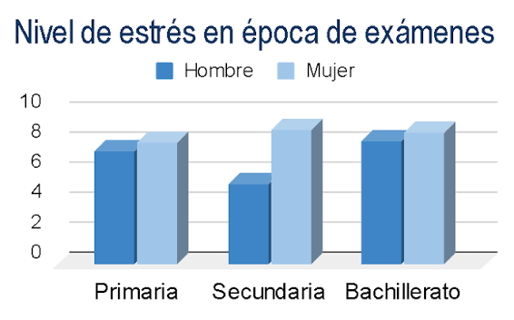

Informar
Explicar las causas y consecuencias del estrés académico y el agotamiento.
La universidad no se trata solamente de cumplir tareas y aprobar exámenes. También se trata de aprender a organizarnos, cuidar nuestra salud emocional y encontrar un equilibrio.
EXPLORAR EL PROYECTOConecta UABC es una iniciativa informativa que busca promover el bienestar académico y emocional de los estudiantes mediante recursos educativos, recomendaciones y herramientas digitales.
Explicar las causas y consecuencias del estrés académico y el agotamiento.
Promover estrategias de organización, descanso y hábitos saludables.
Facilitar el acceso a recursos académicos y servicios de apoyo.
La acumulación de tareas, los exámenes, las responsabilidades personales y la falta de descanso pueden generar dificultades durante la vida estudiantil.
Puede aparecer cuando las exigencias escolares parecen superar el tiempo o los recursos disponibles.
La presión por obtener resultados puede afectar la concentración, el descanso y la tranquilidad.
La falta de planificación puede ocasionar entregas de último momento, cansancio y pérdida de tiempo libre.
La siguiente gráfica compara los niveles reportados de estrés en hombres y mujeres durante distintas etapas escolares.

Fuente: gráfica proporcionada para este proyecto. No se especifican autor, año, muestra ni escala de medición. Los resultados corresponden a etapas escolares previas a la universidad, por lo que no representan datos específicos de estudiantes UABC.
Puede dificultar la atención y el aprendizaje.
Puede relacionarse con problemas para dormir y cansancio.
Puede contribuir a irritabilidad, preocupación y desmotivación.
Anota exámenes, proyectos y fechas de entrega en una agenda.
Trabaja en objetivos pequeños para evitar acumulaciones.
Alterna el estudio con pausas y procura dormir lo suficiente.
Practica actividad física y dedica tiempo a tus intereses.
Comparte tus preocupaciones con personas de confianza.
Si el malestar persiste, solicita apoyo profesional.
El estrés académico puede analizarse a partir de sus causas, consecuencias y estrategias de prevención.
Respuesta ante las exigencias de la vida escolar.
Equilibrio entre las actividades académicas, la salud y la vida personal.
Mapa conceptual de elaboración propia, basado en información general de la OMS sobre el estrés.
En este apartado se presenta una infografía con recomendaciones para identificar y manejar el estrés académico.

Material informativo sobre bienestar y prevención del estrés.
Consulta este recurso audiovisual como complemento de la información presentada en el proyecto.
Organiza clases, exámenes y fechas de entrega.
ABRIR CALENDARGuarda documentos y comparte trabajos con tu equipo.
ABRIR DRIVEConsulta actividades y materiales académicos.
ABRIR BLACKBOARDOrganiza reuniones y sesiones de estudio.
ABRIR MEETEncuentra artículos y publicaciones académicas.
BUSCAR ARTÍCULOSConsulta los recursos bibliográficos universitarios.
CONSULTAR BIBLIOTECALa orientación y el acompañamiento pueden ayudar a enfrentar dificultades académicas y emocionales.
Consulta los servicios de acompañamiento disponibles en tu campus.
Solicita orientación para resolver dudas y dificultades relacionadas con tus estudios.
Recibe información sobre hábitos de estudio y adaptación universitaria.